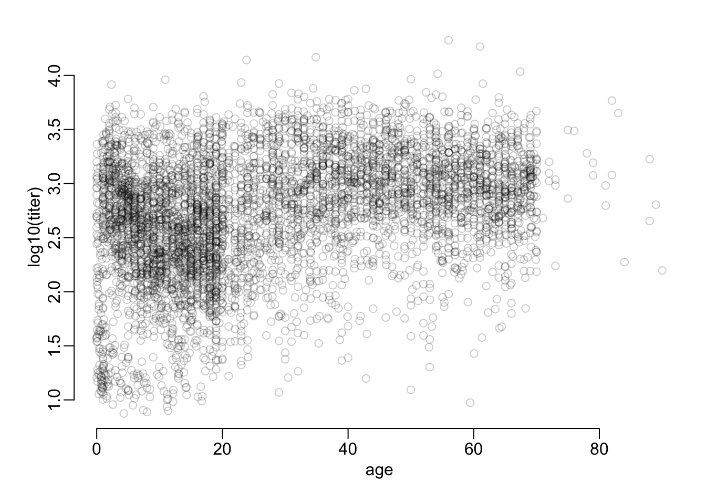
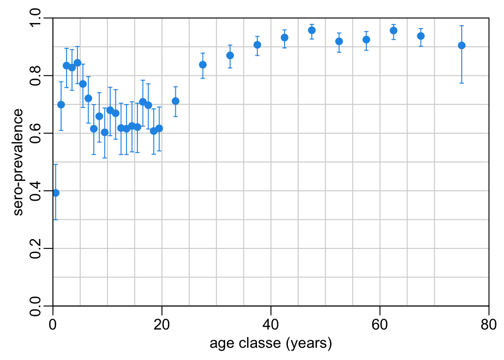
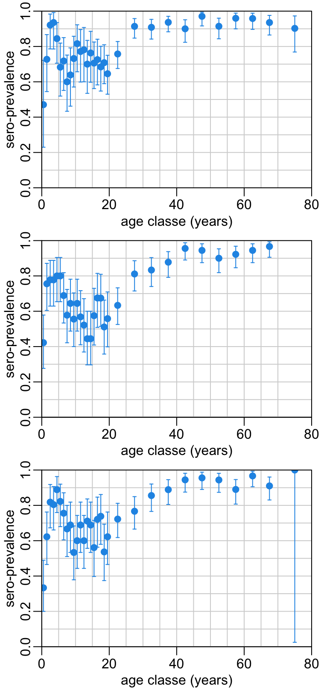
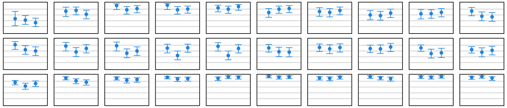

if (grepl("arc|hoisy", Sys.getenv("USER"))) {
path2data <- paste0("~/Library/CloudStorage/OneDrive-OxfordUniversityClinical",
"ResearchUnit/GitHub/choisy/measles serology/")
}Measles serology
1 Constants
The path to the data folder:
2 Packages
Required packages:
required <- c("sf", "readxl", "stringr", "purrr", "tidyr", "magrittr", "dplyr",
"lubridate", "mgcv")Installing those that are not installed yet:
to_install <- required[! required %in% installed.packages()[, "Package"]]
if (length(to_install)) install.packages(to_install)Loading the packages for interactive use:
invisible(sapply(required, library, character.only = TRUE))3 Functions
A function that generates names of a vector of character strings from its content:
set_names2 <- function(x) {
setNames(x, x |>
str_remove("^.*_") |>
str_remove("^.*-") |>
str_remove(".xlsx$"))
}A tuning of the text() function that includes white background to the text:
text2 <- function(x, y, labels, cex = 1, bg = "white", padx = 10, pady = .1, ...) {
w <- strwidth(labels, cex = cex)
h <- strheight(labels, cex = cex)
rect(x - w / 2 - padx, y - h / 2 - pady / 2, x + w / 2 + padx, y + h / 2 + pady / 2,
col = bg, border = NA)
text(x, y, labels, cex = cex, ...)
}Tuning of the rgb() function:
rgb2 <- function(...) rgb(..., maxColorValue = 255)Tunings of the plot() function:
plot2 <- function(...) plot(..., axes = FALSE)
plot3 <- function(...) plot2(..., ann = FALSE)
plot4 <- function(...) plot3(..., type = "n")A tuning of the pie() function:
pie2 <- function(x, ...) if (all(x == 0)) plot4(1) else pie(x, ...)A function that pads a data frame of coordinates:
pad <- function(x) {
x <- arrange(x, 1)
xs <- x[[1]]
tibble(c(first(xs), xs, last(xs)), c(0, x[[2]], 0)) |>
setNames(names(x)[1:2])
}Some tunings of the abline() function:
abline2 <- function(...) abline(..., col = "lightgrey")
abline3 <- function(...) abline(..., col = "grey")Tuning of the grep() function:
grep2 <- function(pattern, x, ...) grep(x, pattern, value = TRUE, invert = TRUE, ...)A tuning of the mgcv::gam() function:
gam2 <- function(...) mgcv::gam(..., method = "REML")A function that retrieves the REML from a GAM model:
get_reml <- function(x) as.numeric(x$gcv.ubre)A function that retrieves the percentage of deviance explained from a GAM model:
dev_explained <- function(x) summary(x)$dev.explA tuning of the segments() function:
segments2 <- function(...) segments(..., col = 2, lwd = 4)A function that extends the tally() function by adding a column of the corresponding proportions:
tally2 <- function(x) {
x |>
tally() |>
mutate(prop = 100 * n / sum(n))
}A tuning of the arrows() function:
arrows2 <- function(...) arrows(..., angle = 90, code = 3)A tuning of the points() function:
points2 <- function(...) points(..., pch = 19)A tuning of the par() function:
par2 <- function(...) par(..., cex = 1)4 Data
4.1 Functions
A function that recodes sex:
recode_sex <- function(x) {
sex_val <- sort(unique(x$sex))
males <- grep("^M|na", sex_val, TRUE, value = TRUE)
females <- grep("^M|na", sex_val, TRUE, value = TRUE, invert = TRUE)
mutate(x, across(sex, ~ recode_values(.x, males ~ "male", females ~ "female")))
}A piece of code common to all the sample collections:
common_data_processing <- function(x) {
x |>
filter_out(if_all(everything(), is.na)) |>
recode_sex() |>
separate_wider_delim(ID, regex("\\s+"), names = c("sID", "cdate", "plate")) |>
mutate(across(titer, as.double))
}4.2 Data
Loading all the excel files of the data folder:
the3files <- path2data |>
list.files(full.names = TRUE) |>
grep2("gadm") |>
grep2("cache") |>
set_names2() |>
map(read_excel, "Marc", col_types = "text")The first collection:
first_collection <- the3files$DEC2019 |>
common_data_processing() |>
mutate(date_chr = if_else( grepl("[./]", date_collection), date_collection, NA),
date_num = if_else(!grepl("[./]", date_collection), date_collection, NA),
across(date_num, ~ .x |> as.numeric() |> as_date("1899-12-30")),
across(date_chr, dmy),
collection_date = coalesce(date_num, date_chr)) |>
select(participant, hospital, collection, sample_ID, age_group, age, sex,
collection_date, plate, titer, conclusion)Combining the collections:
dataset <- the3files |>
extract(c("Dec2022", "Apr24")) |>
map(select, -date_collection) |>
bind_rows() |>
common_data_processing() |>
mutate(collection_date = ymd(paste(year_collection, month_collection, day_collection,
sep = "-"))) |>
select(participant, province, hospital, site, collection, sample_ID, age_group, age,
sex, collection_date, plate, titer, conclusion) |>
bind_rows(first_collection) |>
mutate(province = ifelse(is.na(province), hospital, province),
across(province, ~ recode_values(.x, "AG" ~ "An Giang",
"BD" ~ "Binh Dinh",
"DL" ~ "Dak Lak",
"DT" ~ "Dong Thap",
"HC" ~ "HCMC",
"HU" ~ "Hue",
"KG" ~ "Kien Giang",
"KH" ~ "Khanh Hoa",
"QN" ~ "Quang Ngai",
"ST" ~ "Soc Trang",
"Daklak" ~ "Dak Lak",
"HUE" ~ "Hue",
"HCM" ~ "HCMC", default = .x)),
year = year(collection_date),
time_point = recode_values(year, 2019:2020 ~ "T1",
2022:2023 ~ "T2", default = "T3"),
across(age, ~ ifelse(participant == "0158" & province == "Dak Lak" &
collection == "42", "48", .x)),
age_unit = str_remove_all(age, "\\d"),
age2 = as.numeric(str_remove_all(age, "\\D")),
age3 = as.numeric(age), # note: this generate NAs
age4 = ifelse(is.na(age3), ifelse(age_unit %in% c("M", "th"), age2 / 12,
ifelse(age_unit == "ng", age2 / 365, age2)),
age3),
age = ifelse(age4 > 100, year - age4, age4),
age_group = cut(age, c(0:20, seq(25, 70, 5), 100), right = FALSE),
across(conclusion, ~ ifelse(.x == "pós", "Pos", .x))) |>
select(-c(year, age_unit, age2, age3, age4, hospital)) |>
arrange(time_point, province, age_group, collection_date)A hash table to generate site ID from province names:
hash <- dataset |>
filter_out(time_point == "T1") |>
filter(age > 20) |>
select(province, site) |>
unique() |>
with(setNames(site, province))Completing the site ID when missing:
dataset <- mutate(dataset, across(site, ~ ifelse(is.na(.x), hash[province], .x)))Which gives:
dataset# A tibble: 5,573 × 13
participant province site collection sample_ID age_group age sex
<chr> <chr> <chr> <chr> <chr> <fct> <dbl> <chr>
1 0033 An Giang 119 42 AG420033 [9,10) 9 female
2 0060 An Giang 119 42 AG420060 [9,10) 9 female
3 0016 An Giang 119 42 AG420016 [14,15) 14 male
4 0036 An Giang 119 42 AG420036 [14,15) 14 female
5 0040 An Giang 119 42 AG420040 [14,15) 14 female
6 0022 An Giang 119 42 AG420022 [15,16) 15 female
7 0037 An Giang 119 42 AG420037 [15,16) 15 female
8 0042 An Giang 119 42 AG420042 [15,16) 15 male
9 0009 An Giang 119 42 AG420009 [16,17) 16 female
10 0013 An Giang 119 42 AG420013 [16,17) 16 female
# ℹ 5,563 more rows
# ℹ 5 more variables: collection_date <date>, plate <chr>, titer <dbl>,
# conclusion <chr>, time_point <chr>Checking the thresholds:
dataset |>
filter(conclusion == "Neg") |>
pull(titer) |>
max()[1] 149.654dataset |>
filter(conclusion == "Equi") |>
pull(titer) |>
range()[1] 150.3105 199.9807dataset |>
filter(conclusion == "Pos") |>
pull(titer) |>
min()[1] 200.10925 Sampling locations
Loading the sf object of the provinces of Vietnam:
gadm1 <- readRDS(paste0(path2data, "gadm36_VNM_1_sf.rds"))
st_crs(gadm1) <- st_crs(gadm1)Plotting the provinces from which samples where collected:
sel <- dataset |>
pull(province) |>
unique() |>
str_replace("Hue", "Thua Thien Hue") |>
str_replace("HCMC", "Ho Chi Minh")
opar <- par(plt = rep(0:1, 2))
gadm1 |>
st_geometry() |>
plot(col = "lightyellow")
gadm1 |>
filter(VARNAME_1 %in% setdiff(sel, "Kien Giang")) |>
st_geometry() |>
plot(add = TRUE, col = 2)
gadm1 |>
filter(VARNAME_1 == "Kien Giang") |>
st_geometry() |>
plot(add = TRUE, col = 7)
par(opar)
6 Samples metadata
Number of samples per site per time point:
with(dataset, table(province, time_point)) time_point
province T1 T2 T3
An Giang 200 200 200
Binh Dinh 200 200 200
Dak Lak 200 200 200
Dong Thap 200 200 200
HCMC 200 186 187
Hue 200 200 200
Khanh Hoa 200 200 200
Kien Giang 200 0 0
Quang Ngai 200 200 200
Soc Trang 200 200 200A tuning of the barplot() function:
make_barplot2 <- function(n1 = 5, n2 = 10, ad = 20) {
function(x, ...) {
with(x, {
barplot(Freq, space = 0, col = 4, ...)
mtext(province[1], line = -.5)
})
segments2( 0, n1, ad, n1)
segments2(ad, n2, 31, n2)
}
}
barplot2 <- make_barplot2()Number of sample per age class, per province, per time point:
tmp <- dataset |>
with(table(age_group, province, time_point)) |>
as.data.frame()
ylim <- c(0, max(tmp$Freq))
opar <- par2(mfcol = c(10, 3), plt = c(.12, .985, .1, .9))
tmp |>
group_by(time_point, province) |>
group_split() |>
walk(~ barplot2(.x, ylim = ylim))
par(opar)
Number of samples per day and site:
hz_lines <- 1:10
opar <- par(plt = c(.105, .97, .1, .9))
dataset |>
group_by(province, collection_date) |>
tally() |>
ungroup() |>
mutate(y = max(hz_lines) + 1 - as.numeric(as.factor(province))) |>
with(plot3(collection_date, y, cex = sqrt(n), col = 4, xpd = TRUE))
lb <- 2020:2024
axis(1, ymd(paste(lb, "0101")), lb)
abline3(h = hz_lines)
text2(rep(ymd(20210701), length(hz_lines)), rev(hz_lines), unique(dataset$province))
par(opar)
An alternative representation:
plot2(NA, xlim = range(dataset$collection_date), ylim = c(0, 600), xlab = NA,
ylab = "cumulative number of samples")
axis(1, ymd(paste(lb, "0101")), lb); axis(2)
dataset |>
group_by(province, collection_date) |>
tally() |>
group_modify(~ mutate(.x, cumn = cumsum(n))) |>
group_walk(~ with(.x, lines(collection_date, cumn, type = "s", col = 4)))
Yet another representation:
dataset |>
group_by(collection_date) |>
tally() |>
with(plot(collection_date, n, type = "h", col = "4", xlab = NA,
ylab = "sampling intensity (/day)"))
Gender distribution:
opar <- par(mfcol = c(10, 3), plt = c(.05, .95, .01, .91))
dataset |>
with(table(sex, province, time_point)) |>
as.data.frame() |>
group_by(time_point, province) |>
group_split() |>
walk(~ with(.x, {
pie2(Freq, NA, col = c(rgb2(247, 114, 184), rgb2(62, 146, 247)))
mtext(province[1], line = -.5)
}))
par(opar)
7 Titers
A function that plots a 3-color distribution from a 2-column data frame df that contains the coordinates of the distribution, with \(x\)-values in the first column named x and \(y\)-values in the second column, on a decimal log scale of the \(x\) values:
ptiters <- function(df, main = NULL, th1 = 150, th2 = 200, lb2 = 1:5, ...) {
plot2(df, type = "n", xlab = "titer (IU/L)", ylab = "density", ...)
lb1 <- unlist(map(10^(lb2), ~ .x * 1:10))
axis(1, log10(lb1), NA, tcl = - .25); axis(1, lb2, 10^lb2); axis(2)
df |>
group_by(cut(x, c(-Inf, log10(c(th1, th2)), Inf))) |>
group_map(~ pad(.x)) |>
walk2(c(2, 7, 3), ~ polygon(.x, col = .y, border = NA))
if (! is.null(main)) title(main, line = -.25, cex.main = 1)
}A function that (1) generates the 2-column input data frame of the function ptiters() from the column named titer of the data frame df and then (2) feeds it to the ptiters() function to draw the 3-color distribution:
plot_titers <- function(df, main = NULL, ...) {
df |>
pull(titer) |>
log10() |>
density() |>
extract(1:2) |>
as_tibble() |>
ptiters(main, ...)
}Plotting the distribution of all the titers, across the 3 time points and the 10 sites:
plot_titers(dataset)
The corresponding proportions in each of the 3 categories of titer values are the following:
dataset |>
group_by(conclusion) |>
tally2()# A tibble: 3 × 3
conclusion n prop
<chr> <int> <dbl>
1 Equi 297 5.33
2 Neg 879 15.8
3 Pos 4397 78.9 The distributions of all the titers across the 10 sites for each time point separately:
opar <- par2(mfrow = c(3, 1), plt = c(.13, .97, .18, .95))
dataset |>
group_by(time_point) |>
group_split() |>
walk2(c(paste("Dec", c(2019, 2022)), "Apr 2024"),
~ plot_titers(.x, .y, xlim = c(.5, 4.5), ylim = c(0, .8)))
par(opar)
The corresponding proportions in each of the 3 categories of titer values and for each time point are the following:
dataset |>
group_by(time_point, conclusion) |>
tally2() |>
pivot_wider(id_cols = -n, names_from = time_point, values_from = prop)# A tibble: 3 × 4
conclusion T1 T2 T3
<chr> <dbl> <dbl> <dbl>
1 Equi 4.8 5.32 5.93
2 Neg 12.0 19.6 16.2
3 Pos 83.2 75.1 77.8 7.1 Age profile
with(dataset, plot(age, log10(titer), col = adjustcolor("black", .2)))
8 Sero-prevalence
This function takes a data frame x as input that contains at least 2 columns named conclusion and n that are character and numeric values respectively. The conclusion column as one of its values equal to Pos. The output of the function is a named vector of 3 values being the estimate of the proportion of Pos and the lower and upper bounds of the 95% confidence interval of this estimate.
estimate_prop <- function(x) {
slot_names <- c("p", "l", "u")
x <- with(x, setNames(n, conclusion))
n <- sum(x)
if (n < 1) return(setNames(rep(NA, 3), slot_names))
binom.test(x["Pos"], n) |>
extract(c("estimate", "conf.int")) |>
unlist() |>
setNames(slot_names)
}This function takes a data frame that contains at least 2 columns named age_group, conclusion and as many rows as observations. It returns a data frame with 3 columns (proportion estimate and confidence interval bounds) and as many rows as age groups:
make_prepare_data <- function(template = dataset |>
group_by(age_group, conclusion) |>
tally() |>
ungroup() |>
select(-n)) {
function(x) {
x |>
group_by(age_group, conclusion) |>
tally() |>
left_join(x = template, y = _, c("age_group", "conclusion")) |>
replace_na(list(n = 0)) |>
group_by(age_group) |>
group_split() |>
map_dfr(estimate_prop)
}
}
prepare_data <- make_prepare_data()This function takes the ouptut of prepare_data() and plots the sero-prevalence per age group:
make_p_age_profile <- function(xs = c(.5:19.5, seq(22.5, 67.5, 5), 75)) {
function(x) {
plot(xs, rep(.5, length(xs)), ylim = 0:1, type = "n", xaxs = "i", yaxs = "i",
xlim = c(0, 80), xlab = "age classe (years)", ylab = "sero-prevalence")
abline2(v = seq(0, 70, 5))
abline2(h = seq(0, 1, .1))
with(x, {
arrows2(xs, l, xs, u, .02, col = 4)
points2(xs, p, col = 4)
})
box(bty = "o")
}
}
p_age_profile <- make_p_age_profile()Wrapping up prepare_data() and p_age_profile():
plot_age_profile <- function(x) {
x |>
prepare_data() |>
p_age_profile()
}The age profile of sero-prevalence across the 3 time points and the 10 sites:
plot_age_profile(dataset)
The age profile of sero-prevalence across the 10 sites and for the 3 time points separately:
opar <- par2(mfrow = c(3, 1), plt = c(.13, .97, .18, .95))
dataset |>
group_by(time_point) |>
group_walk(~ plot_age_profile(.x))
par(opar)
x is a list of data frames of 3 columns (proportion estimates and confidence interval bounds). The number of rows of the data frames is equal to the number age group and the number of slot of the list x is equal to the number of time points. The following function returns a list of data frames of 3 columns too where the number of slots of the list and the number of rows of the data frames are switched.
time_change <- function(x) {
map(1:nrow(first(x)), function(y) map_dfr(x, ~ .x[y, ]))
}This function takes a 3-column (proportion estimate and confidence interval bounds) / 3-row (for 3 time points) data frame that corresponds to a given age group and plots the change in sero-prevalence as a function of time.
time_trend <- function(x, xs = 1:3, col = 4) {
with(x, {
plot4(xs, p, xlim = c(0, 4), ylim = 0:1)
abline2(h = seq(.2, .8, .2))
arrows2(xs, l, xs, u, .05, col = col)
points2(xs, p, col = col)
box(bty = "o")
})
}Showing the change in seroprevalence as a function of time for all the age groups separately:
epsl <- .065
opar <- par(mfrow = c(3, 10), plt = rep(c(epsl, 1 - epsl), 2))
dataset |>
filter_out(age_group == last(levels(age_group))) |>
group_by(time_point) |>
group_split() |>
map(prepare_data) |>
map(~ .x[-nrow(.x), ]) |>
time_change() |>
walk(time_trend)
par(opar)
8.1 GAM
Augmenting the data:
data2 <- mutate(dataset, log_titer = log10(titer),
positive1 = titer > 200,
positive2 = titer > 150)8.1.1 Functions
A tuning of the predict() function:
predict2 <- function(model, x = seq(0, 70, le = 512)) {
bind_cols(tibble(x = x),
model |>
predict(list(age = x), se.fit = .95) |>
map(model$family$linkinv) |>
as_tibble())
}A function that adds prediction and confidence interval to a plot:
add_ribbon <- function(pred, col = 4) {
with(pred, {
polygon(c(x, rev(x)), c(ll, rev(ul)), border = NA, col = adjustcolor(col, .2))
lines(x, fit, col = col, lwd = 2)
})
}where pred is an output of the predict2() function and a 4-column data frame with names x, fit, ll and ul. This function plots the predictions of a GAM model:
plot_pred <- function(pred, ylog = TRUE, ylab = "mean titer (IU/L)", ylim = NULL,
col = 4, ...) {
with(pred, {
if (is.null(ylim)) ylim <- pred |>
select(-x) |>
range()
plot2(x, fit, type = "n", ylim = ylim, xaxs = "i", ylab = ylab,
xlab = "age (years)", ...)
})
if (ylog) {
lb1 <- unlist(map(10^(1:5), ~ .x * 1:10))
lb2 <- c(150, 200, 300, 500, 700, 1000)
axis(2, log10(lb1), NA)
axis(2, log10(lb2), lb2)
} else {
axis(2)
}
axis(1)
abline2(v = c(.75, 1.5, seq(5, 65, 10)))
abline3(v = seq(10, 60, 10))
add_ribbon(pred, col)
box(bty = "o")
}where pred is an output of the predict2() function. A wrapper around the predict2(), plot_pred() and add_ribbon() functions:
plot_seroprevalences <- function(data, bs = "tp", k = 50) {
gam2(positive1 ~ s(age, bs = bs, k = k), binomial, data) |>
predict2() |>
plot_pred(ylog = FALSE, ylab = "sero-prevalence", ylim = 0:1, yaxs = "i", col = 3)
gam2(positive2 ~ s(age, bs = bs, k = k), binomial, data) |>
predict2() |>
add_ribbon(2)
abline3(h = 1:9 / 10)
}8.1.2 Analysis
Let’s try 10 smooting basis to see whether one stands out as much better that the others:
models_prev <- tibble(
smoothing_basis = c("thin plate", "thin plate", "Duchon", "cubic regression",
"cubic regression", "cyclic cubic", "B-spline", "P-spline",
"cyclic P-spline", "Gaussian process"),
code = c("tp", "ts", "ds", "cr", "cs", "cc", "bs", "ps", "cp", "gp")) |>
mutate(model = map(code, ~ gam2(positive1 ~ s(age, bs = .x, k = 50),
binomial, data2)),
REML = map_dbl(model, get_reml),
per_dev = map_dbl(model, dev_explained),
AIC = map_dbl(model, AIC),
k_check = map(model, ~ as_tibble(k.check(.x, n.rep = 1000)))) |>
unnest_wider(k_check)which gives:
select(models_prev, -model)# A tibble: 10 × 9
smoothing_basis code REML per_dev AIC `k'` edf `k-index` `p-value`
<chr> <chr> <dbl> <dbl> <dbl> <dbl> <dbl> <dbl> <dbl>
1 thin plate tp 2595. 0.109 5152. 49 16.2 0.983 0.711
2 thin plate ts 2600. 0.109 5153. 49 15.6 0.983 0.717
3 Duchon ds 2594. 0.110 5151. 49 16.6 0.987 0.811
4 cubic regression cr 2593. 0.109 5151. 49 15.9 0.968 0.251
5 cubic regression cs 2598. 0.109 5152. 49 15.3 0.980 0.588
6 cyclic cubic cc 2599. 0.108 5161. 48 15.3 0.983 0.727
7 B-spline bs 2593. 0.109 5153. 49 15.9 0.984 0.707
8 P-spline ps 2593. 0.109 5154. 49 15.3 0.976 0.552
9 cyclic P-spline cp 2599. 0.108 5159. 49 15.4 0.992 0.86
10 Gaussian process gp 2598. 0.109 5152. 49 16.2 0.987 0.702Let’s then stick to the thin plate smoothing. Plotting smoothed trends:
models_prev |>
filter(code == "tp") |>
pull(model) |>
first() |>
predict2() |>
plot_pred(ylog = FALSE, ylab = "prevalence", ylim = 0:1, yaxs = "i")
abline3(h = 1:9 / 10)
plot_seroprevalences(data2)
9 TO DO
- model density() in 2D in order to see density of data points not only as a function of age but also as a function of titers
image_titer_density_age <- function(data, xaxis = TRUE, xlab = "age (years)",
min_titer = NULL, max_titer = NULL) {
if (is.null(min_titer)) min_titer <- min(data$log_titer)
if (is.null(max_titer)) max_titer <- max(data$log_titer)
data |>
filter(age < 70) |>
group_by(age_group) |>
group_map(~ density(.x$log_titer, from = min_titer, to = max_titer)$y) |>
rep(c(rep(1, 20), rep(5, 10))) |>
as.data.frame() |>
as.matrix() |>
t() |>
image(1:70 - .5, seq(min_titer, max_titer, le = 512), z = _, axes = FALSE,
xlab = xlab, ylab = "titer (IU/L)",
col = hcl.colors(256, "YlOrRd", rev = TRUE))
if (xaxis) axis(1)
lb1 <- unlist(map(10^(1:5), ~ .x * 1:10))
lb2 <- 1:5
axis(2, log10(lb1), NA, tcl = - .25)
axis(2, lb2, 10^lb2)
abline(h = log10(c(150, 200)), col = 2:3, lty = 2, lwd = 2)
box(bty = "o")
}image_titer_density_age(data2)
opar <- par(plt = c(.105, .97, .5, 1 - (1 - .95) / 2 - .15 / 2))
image_titer_density_age(data2, xaxis = FALSE, xlab = NA, min_titer = log10(5))
axis(3, 10 * 0:7)
mtext("age (years)", line = 1.7)
par(plt = c(.105, .97, .15 / 2 + (1 - .95) / 2, .5), new = TRUE)
plot_seroprevalences(data2)
par(opar)
- doing clustering on the ANCOVA
data2 |>
filter(time_point == "T1") |>
gam2(positive1 ~ s(age, bs = "tp", k = 50), binomial, data = _) |>
predict2() |>
plot_pred(ylog = FALSE, ylab = "sero-prevalence", ylim = 0:1, yaxs = "i", col = 2)
data2 |>
filter(time_point == "T2") |>
gam2(positive1 ~ s(age, bs = "tp", k = 50), binomial, data = _) |>
predict2() |>
add_ribbon(3)
data2 |>
filter(time_point == "T3") |>
gam2(positive1 ~ s(age, bs = "tp", k = 50), binomial, data = _) |>
predict2() |>
add_ribbon(4)
data2 |>
filter(time_point == "T1") |>
gam2(positive1 ~ s(age, bs = "tp", k = 50), binomial, data = _) |>
predict2() |>
plot_pred(ylog = FALSE, ylab = "sero-prevalence", ylim = 0:1, yaxs = "i", col = 2)
data2 |>
filter(time_point == "T2") |>
gam2(positive1 ~ s(age, bs = "tp", k = 50), binomial, data = _) |>
predict2() |>
add_ribbon(3)
seroprev3timepoints <- function(x, k = 50, title = FALSE) {
x |>
filter(time_point == "T1") |>
gam2(positive1 ~ s(age, bs = "tp", k = k), binomial, data = _) |>
predict2() |>
plot_pred(ylog = FALSE, ylab = "sero-prevalence", ylim = 0:1, yaxs = "i", col = 2)
x |>
filter(time_point == "T2") |>
gam2(positive1 ~ s(age, bs = "tp", k = k), binomial, data = _) |>
predict2() |>
add_ribbon(3)
x |>
filter(time_point == "T3") |>
gam2(positive1 ~ s(age, bs = "tp", k = k), binomial, data = _) |>
predict2() |>
add_ribbon(4)
if (title) x |>
pull(province) |>
first() |>
text(35, .2, labels = _)
}opar <- par(mfrow = c(3,3), plt = c(.12, .97, .18, .95))
data2 |>
filter_out(province == "Kien Giang") |>
group_by(province) |>
group_split() |>
walk(seroprev3timepoints, title = TRUE)
par(opar)
opar <- par(mfrow = c(3,3), plt = c(.12, .97, .18, .95))
dataset |>
filter_out(province == "Kien Giang") |>
group_by(province) |>
group_split() |>
walk(plot_age_profile)
par(opar)
understanding the age profile of titers and seroprevalence. Maybe as an effect of vaccination and waning immunity for vaccination
Looking at 0-1 and 0-5 in order to see whether we see more detail signal as a function of age